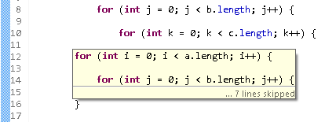

For more information on what is new in Ant 1.8.3 please see the Apache Ant release notes.


When you enable the option Preferences > Java > Compiler > Errors/warnings > Switch is missing default case, JDT will flag switch statements with a missing default case, because such a switch statement can result in variables left uninitialized.

When you enable the sub-option Preferences > Java > Compiler > Errors/warnings > Signal even if default case exists for the Incomplete switch cases on enum option, JDT will flag switch statements over enum which may have an enum value covered only through a default statement, but not directly through a case statement. When new enum constants are added, this option will help in detecting the switch statements that do not cover the new value.


You can hover over a closing curly brace and see the source near the matching opening brace in a hover. This is helpful when you want to see the code near the start of a long code block, the hover also tells the number of lines in the code block

The hover is also useful to temporarily 'highlight' a code block.